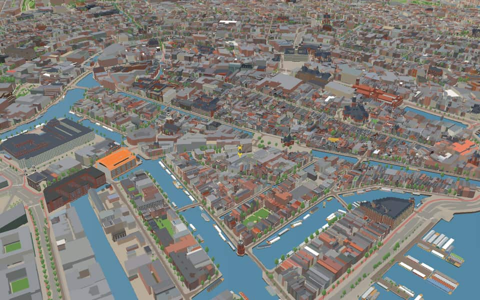
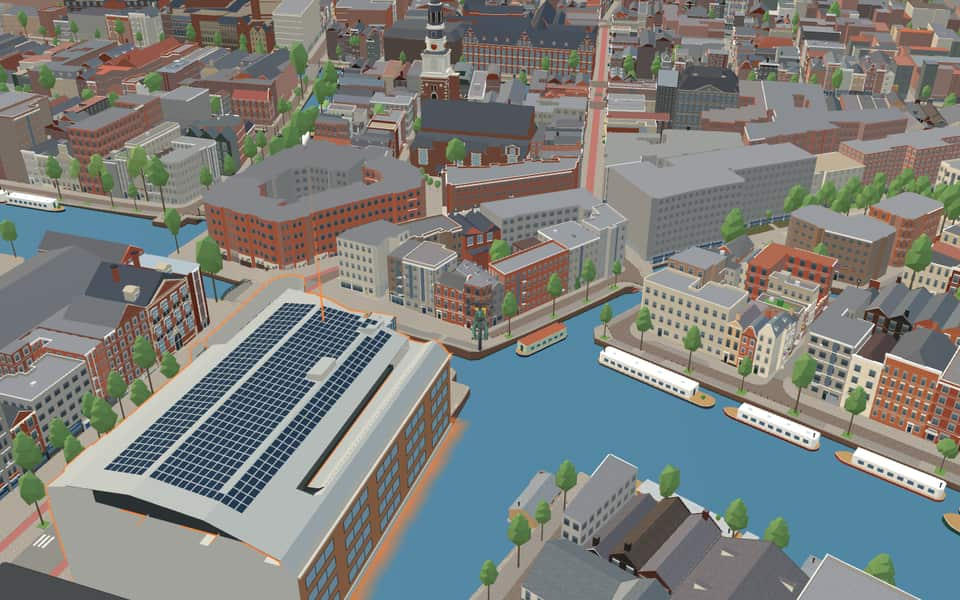
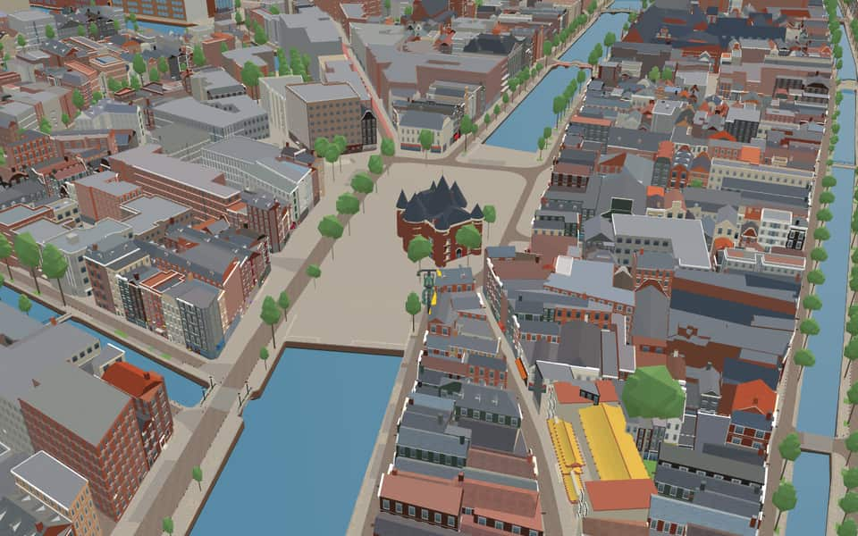
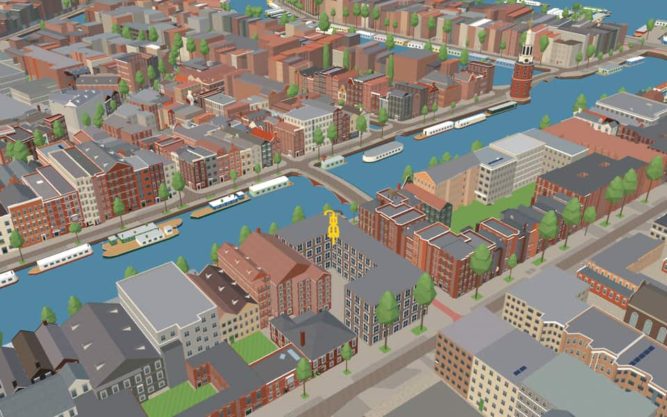

Neighbourhood in Nieuwmarkt/Lastage
Nieuwmarktbuurt
The Nieuwmarktbuurt is the area historically called the Lastage: an old district between the Geldersekade and the Oudeschans, east of and outside the walls of the medieval city. It is a protected townscape. nl.wikipedia.org
The name. The Nieuwmarktbuurt was long known as the Lastage, a name from 'lastaedse', ballast: in the 15th century it was where ships took on ballast. In the 16th century it grew into the city's industrial and harbour district. nl.wikipedia.org


In the game
Frames from a ride through Nieuwmarktbuurt.




6 more photos of Nieuwmarktbuurt

_(54832850509).jpg){kind=link}

.jpg){kind=link}


Built here
Buildings modelled one by one for the ride.
Huis De Pinto
De Waag (Sint-Antoniespoort)


Did you know
Trivia the ride can show you here.
- In 1975 the Nieuwmarkt riots against demolition for a metro and motorway ended the highway plans. Wikipedia
- Outside the medieval walls, the ground here could not be raised or paved, so besiegers could not set up cannon. Wikipedia (translated from Dutch)
- In parts of the old Lastage only wooden buildings were allowed, quick to pull down or burn. Wikipedia (translated from Dutch)
- After rumours of ghosts in 1833, the Oudeschans was nicknamed the ghost quay. Wikipedia
- The naturalist Jan Swammerdam lived at Oudeschans 18, where his father kept a pharmacy. Wikipedia
- The Krom Boomssloot is named after Cornelis Boom, a 16th-century landowner and shipbuilder. Wikipedia
- Huis De Pinto (1605) is named after a dynasty of Portuguese-Jewish merchant bankers. Wikipedia
- Huis De PintoThe double facade was designed by Elias Bouman after David de Pinto acquired the adjacent building. en.wikipedia.org
- Huis De PintoFrom 1975 until 2012, the building served as a public library before becoming offices. en.wikipedia.org
- Huis De PintoGrandson Isaac de Pinto grew up within these historic walls. en.wikipedia.org
- New MarketA medieval city gate now stands here, having been converted into a weighing house after the walls were demolished. en.wikipedia.org
- New MarketIn World War II, Nazis used this location as a collection point for Jews rounded up for concentration camps. en.wikipedia.org
- New MarketHeavy riots erupted in 1975 when residents fought against plans to tear down buildings for a highway through the area. en.wikipedia.org
- KeizersbrugA new double bascule bridge replaced the old wooden drawbridge in 1864. nl.wikipedia.org
20 more facts
- KeizersbrugBastiaan de Greef and Willem Springer likely designed the structure based on pillar caps. nl.wikipedia.org
- BijleveldschesluisThe name Bijleveldschesluis honors the Bijleveld Water Board, which once held land east of the city. nl.wikipedia.org
- BijleveldschesluisAmsterdam took over management of this lock in July 1492 after it had been run by the Bijleveld board. nl.wikipedia.org
- GeldersekadeA stone fish hall replaced wooden sheds on the water in 1862 before being demolished in 1938. en.wikipedia.org
- Krom BoomsslootThe canal honors Cornelis Boom, a 16th-century shipbuilder who commissioned its creation. en.wikipedia.org
- Krom BoomsslootResidents successfully stopped a 1994 plan to remove the trees lining this waterway. en.wikipedia.org
- Krom BoomsslootArchitect Emanuel Marcus Rood designed the former coffee roasting factory in the early 20th century. en.wikipedia.org
- Krom BoomsslootThe sober art nouveau structure is now recognized as a municipal monument. en.wikipedia.org
- OudeschansThe Oudeschans was originally named Nieuwe Gracht when an arm of the Amstel was dug out between 1515 and 1518. en.wikipedia.org
- OudeschansIn 1602 a lock was built to allow ships to sail from the Oudeschans to the Amstel via the Zwanenburgwal. en.wikipedia.org
- OudeschansPainter Willem Witsen rented the studio at number 5 between 1887 and 1888, previously occupied by George Hendrik Breitner. en.wikipedia.org
- Recht BoomsslootThe Fa Yin Chinese Association has taught language and hosted activities for seniors at number 5 since 1978. en.wikipedia.org
- Recht BoomsslootDe Rode Leeuw dates back to 1726 among several national monuments lining this stretch. en.wikipedia.org
- Sint AntoniesluisThe name Sint Antoniesluis also appears as Sint Anthoniesluis in historical records. nl.wikipedia.org
- SnoekjesgrachtThe name Snoekjesgracht honors Jan Pieters Snoeck, who displayed a pike on his 1595 house facade. en.wikipedia.org
- SnoekjesgrachtPlans to dig out the buried Rotterdammersloot were abandoned in 2003 due to existing buildings and lack of space. en.wikipedia.org
- SnoekjesgrachtBridge number 289 crosses the water where Snoekjessteeg meets the canal. en.wikipedia.org
- Sint AntoniesbreestraatOriginally a medieval dike called Sint Antoniesdijk, it protected the city from flooding before becoming a street. en.wikipedia.org
- Sint AntoniesbreestraatRembrandt lived here from 1631 to 1635 at the home of art dealer Hendrick van Uylenburgh. en.wikipedia.org
- Sint AntoniesbreestraatSint Antoniesbreestraat translates to "St. Anthony's Broad Street". en.wikipedia.org
Names on the map
Where the canal, bridge and street names come from.
Canals and water
- BijleveldschesluisThis name appears in old archives; its exact meaning is unknown.
- GeldersekadeAt the city's second expansion on the east side, today's Geldersekade was the city moat. So the inner bank (on the Zeedijk side) is the oldest, built around 1500. The other side lay outside the city until 1585. In the seventeenth century the old side was called partly Keulse kaai (Cologne quay) and further on Gelderse kaai, and for a short time also Londense kaai or Engelse kaai. The names came from the landing stages here where ships moored that sailed to the towns of Gelderland, to Cologne, London and other English ports. Some remains of the city wall built here around 1500 between the Waag and the Schreierstoren can still be found in the quay wall and by the Bantammerbrug.
- Krom BoomsslootNamed after the sixteenth-century master shipbuilder Cornelis Pietersz. Boom. To connect his yard on the Lastage with the surrounding water he had a canal and a side canal dug.
- OudeschansA schans is an earthen rampart, and the Oudeschans was built as such around 1516 for defence against the Guelders. The rampart itself has long gone, but the water and quay have kept the name. The addition 'Oude' (old) was probably given when a new rampart was built around the enlarged city in the following century.
- Recht BoomsslootThe sixteenth-century master shipbuilder Cornelis Pietersz Boom. To connect his yard on the Lastage with the surrounding water he had a canal and a side canal dug, which were then named after him.
- Sint AntoniesluisNamed after the Sint Antoniesdijk, the sea dike outside the city until the seventeenth century, which in turn took its name from the St Anthony's hospital or leper house. Before 1976 the Sint Antoniesluis was part of the Zwanenburgwal.
- SnoekjesgrachtAfter a sixteenth-century resident, Jan Pieters Snoeck, who had a pike (snoek) depicted on the façade of his house. The name was originally Snoeksgracht/steeg.
Bridges
- ArmeensebrugNamed after the nearby former Armenian church.Bridge 293: a steel bridge for road traffic, dated 1893 in the city's bridge register.
- KeizersbrugIt takes its name from the nearby Keizersstraat.Bridge 286: a brick bridge for road traffic, dated 1982 in the city's bridge register.
- SchottenburchsbrugBridge 292: a steel bridge for road traffic, dated 1889 in the city's bridge register.
- SnoekjesbrugAfter a sixteenth-century resident, Jan Pieters Snoeck, who had a pike (snoek) depicted on the façade of his house. The name was originally Snoeksgracht/steeg.Bridge 289: a steel bridge for road traffic, dated 1888 in the city's bridge register.
Streets
- ArmeensebrugNamed after the nearby former Armenian church.
- BrandewijnsteegThe alley ran behind the brewery 'Den Witten Haen', which used to stand on the Geldersekade. That is probably where the name (brandy alley) comes from.
- DijkdwarsstraatThe street was laid out as a dike at the end of the sixteenth century, after which the surroundings (long a marsh) were filled in with earth (aangeplempt).
- DijkstraatThe street was laid out as a dike at the end of the sixteenth century, after which the surroundings (long a marsh) were filled in with earth (aangeplempt).
- GeldersekadeAt the city's second expansion on the east side, today's Geldersekade was the city moat. So the inner bank (on the Zeedijk side) is the oldest, built around 1500. The other side lay outside the city until 1585. In the seventeenth century the old side was called partly Keulse kaai (Cologne quay) and further on Gelderse kaai, and for a short time also Londense kaai or Engelse kaai. The names came from the landing stages here where ships moored that sailed to the towns of Gelderland, to Cologne, London and other English ports. Some remains of the city wall built here around 1500 between the Waag and the Schreierstoren can still be found in the quay wall and by the Bantammerbrug.
- Geurt BrinkgrevebrugMonument conservationist, sculptor and writer (1917-2005). An advocate for preserving the historic city centre, he eventually brought about a turning point in thinking about the old cultural heritage. He also played a major part in keeping the old street pattern of the Nieuwmarkt neighbourhood. He received the Silver Medal (Zilveren Penning) in 1982.
- J.W. SiebbeleshofHe lived from 1904 to 1985 and for years worked for the interests of older residents of the Nieuwmarkt neighbourhood. The Centre for the Elderly for people from the neighbourhood is largely thanks to him.
- KeizersbrugIt takes its name from the nearby Keizersstraat.
- KeizersstraatOn the Lastage. The streets were laid out at the end of the sixteenth century.
- KoningsstraatThe streets lie on the old Lastage and were laid out at the end of the sixteenth century.
- Korte DijkstraatThe street was laid out as a dike at the end of the sixteenth century, after which the surroundings (long a marsh) were filled in with earth (aangeplempt).
- Korte KeizersdwarsstraatOn the Lastage. The streets were laid out at the end of the sixteenth century.
14 more streets with a story
- Korte KeizersstraatOn the Lastage. The streets were laid out at the end of the sixteenth century.
- Korte KoningsdwarsstraatOn the Lastage. The streets were laid out at the end of the sixteenth century.
- Korte KoningsstraatThe streets lie on the old Lastage and were laid out at the end of the sixteenth century.
- Krom BoomsslootA side canal of the Recht Boomssloot, hence the prefix krom (crooked).
- Nieuwe HoogstraatThese streets lie slightly higher (hoog) than those around them. The Oude Hoogstraat was laid out around 1490, the Nieuwe Hoogstraat a century later.
- NieuwmarktCreated in 1614 by filling in and vaulting over part of the Kloveniersburgwal. The square that thus arose around the Waag was at first called Sint Antoniesmarkt, and later Nieuwmarkt (new market).
- OudeschansA schans is an earthen rampart, and the Oudeschans was built as such around 1516 for defence against the Guelders. The rampart itself has long gone, but the water and quay have kept the name. The addition 'Oude' (old) was probably given when a new rampart was built around the enlarged city in the following century.
- Recht BoomsslootThe sixteenth-century master shipbuilder Cornelis Pietersz Boom. To connect his yard on the Lastage with the surrounding water he had a canal and a side canal dug, which were then named after him.
- Sint AntoniesbreestraatNamed after the Sint Antoniesdijk, the sea dike outside the city until the seventeenth century, which in turn took its name from the St Anthony's hospital or leper house.
- Sint AntoniesluisNamed after the Sint Antoniesdijk, the sea dike outside the city until the seventeenth century, which in turn took its name from the St Anthony's hospital or leper house. Before 1976 the Sint Antoniesluis was part of the Zwanenburgwal.
- SnoekjesbrugAfter a sixteenth-century resident, Jan Pieters Snoeck, who had a pike (snoek) depicted on the façade of his house. The name was originally Snoeksgracht/steeg.
- SnoekjesgrachtAfter a sixteenth-century resident, Jan Pieters Snoeck, who had a pike (snoek) depicted on the façade of his house. The name was originally Snoeksgracht/steeg.
- SnoekjessteegAfter a sixteenth-century resident, Jan Pieters Snoeck, who had a pike (snoek) depicted on the façade of his house. The name was originally Snoeksgracht/steeg.
- ZakslootjeAn old alley name, originally a dead-end ditch (zaksloot). From 1875 it was no longer in the register of street names, but because addresses were needed it was put back in 1984.
4 other streets without a recorded story
New Market · Salamandersteeg · Schottenburchsbrug · Sleperssteeg